The mainland tail:
drive it, or don't go
A car-based Peloponnese loop plus Meteora is cheaper and emptier than the Cyclades in August but far hotter and more driving — here is the routed 5-night tail that works.
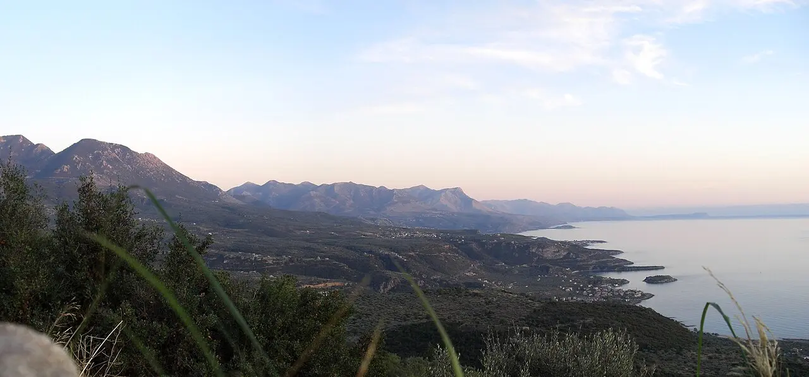
Race control — go / no-go
the decision before the routeGreen flag — take the mainland
A mid-tier mainland room, against €150–280 on Santorini or Mykonos in July–August [7]. You book late, you drive yourself, there is no ferry to sell out on you [18], and you would rather see Mycenae, Epidaurus and Mystras than lie on a beach.
Red flag — take the islands
What the eastern Peloponnese ran during the July 2026 heatwave, while the Aegean sat at 28–30 °C under the meltemi [5]. The interior Peloponnese and Thessaly are the hottest parts of the country in a heat event — precisely where the ruins are. If anyone in the party wilts above 35 °C, stop reading.
Instrument check — mainland vs Cyclades
August 2026Rooms [7] · heat [5] · hire car [17] · ferry [18] · tolls, Jan 2026 rates, e-pass saves 8–15% [6] · Mani road speed [8] · crowds [13] [15]
Route A — the 5-night loop
Athens airport → Argolid → Laconia → Messenia → AthensAthens airport — pick up the car
Rent at the airport and never look back at Piraeus. August is the peak rate band for a compact [17].
no cover
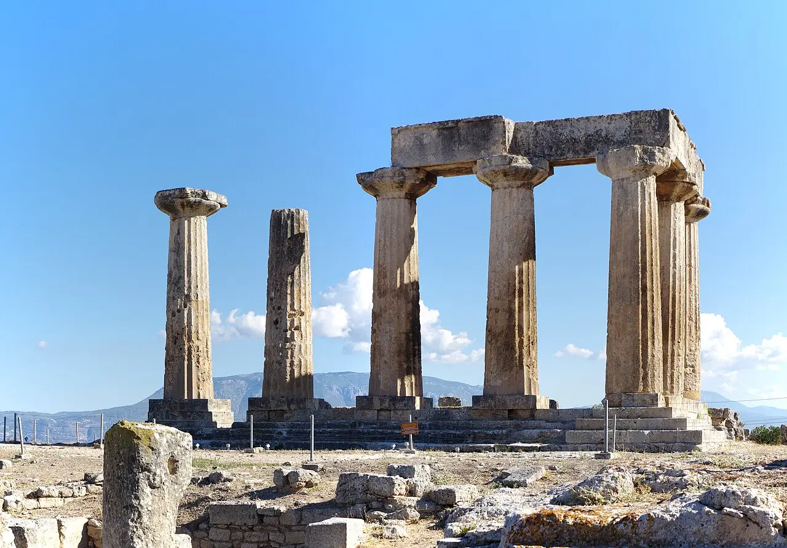
Ancient Corinth
The cheapest of the big sites and the one that fits a mid-morning arrival without wrecking the day [10].
go after 17:00
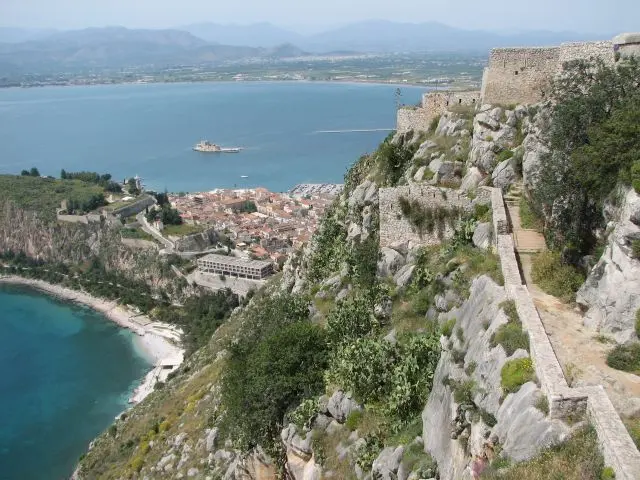
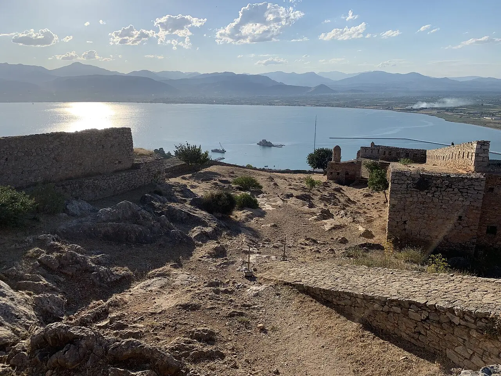
beats the heat

Epidaurus at 08:00
The Epidaurus Festival runs 20 June – 29 August 2026 in the ancient theatre, with August weekend performances — Antigone 7–8 Aug, Lysistrata 21–22 Aug, Ion 28–29 Aug [12]. A 30-minute drive, at sunset, in a 10,000-seat theatre: no island has an equivalent. Afternoon: swim at Karathona, evening in the old town [4].
2 h on foot
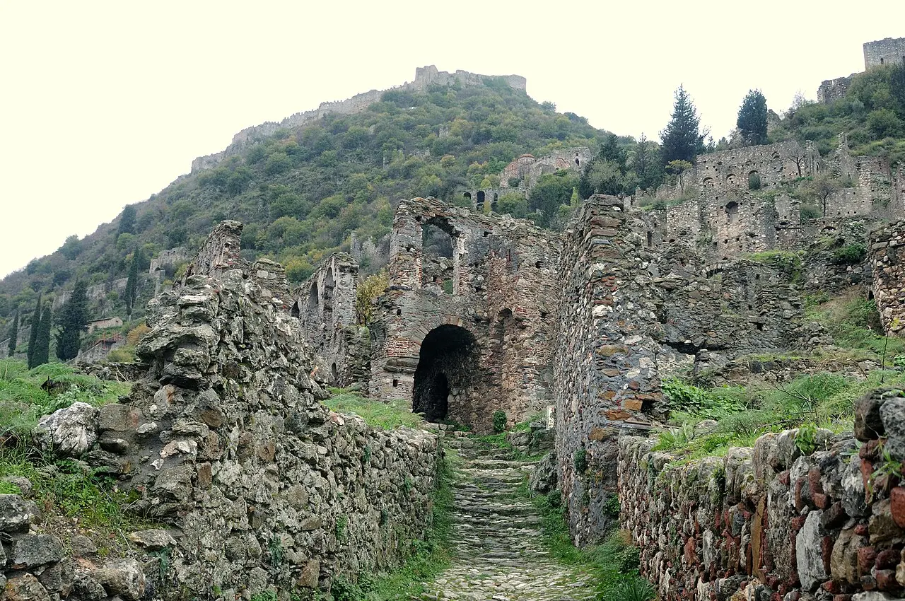
Mystras — enter at the top
Built on a steep hill: entering at the lower gate turns the visit into a hard climb, so start at the top and walk down [11].
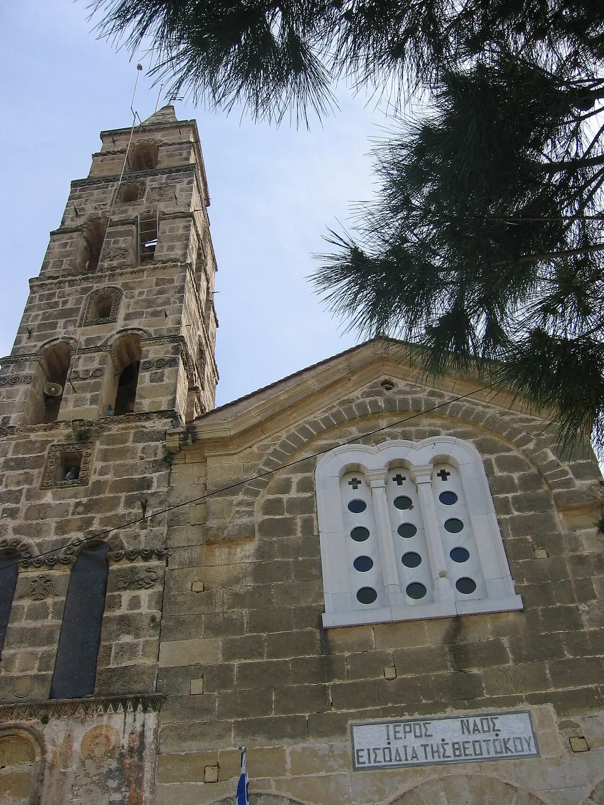
nothing after 11:00
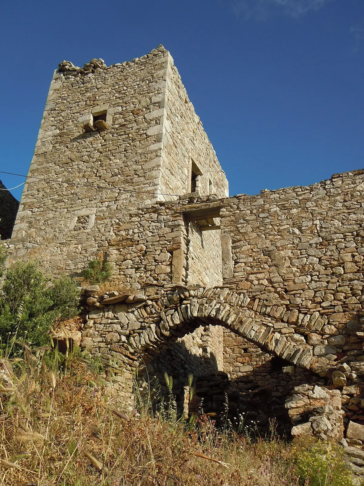
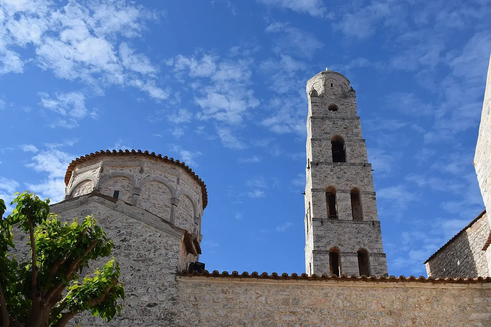
Areopoli, Diros, a pebble cove
Mani back roads average around 60 km/h — old, narrow, and slower than any map estimate; the region really wants 3–4 days and July–August is its worst season [8]. Treat the afternoon as swimming, not sightseeing.
then it flips
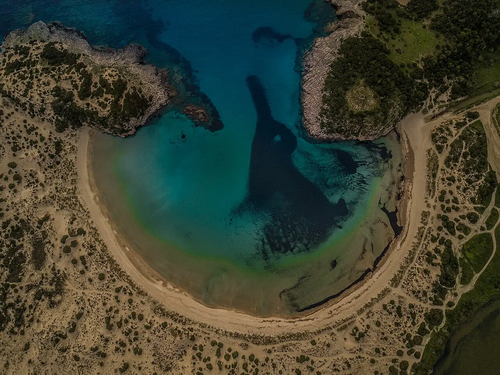
Voidokilia before 09:30
Unorganised in the literal Greek sense: park at the end of the dirt road from Petrochori and walk through the dunes. Bring your own shade or accept there is none [13].
Night 5 near Athens airport
Sleeping by the airport on the last night is what makes the ~9 h of driving survivable — no dawn run up the A7 with a flight to catch.
Leg ledger — every drive that matters
distance · wheel time · toll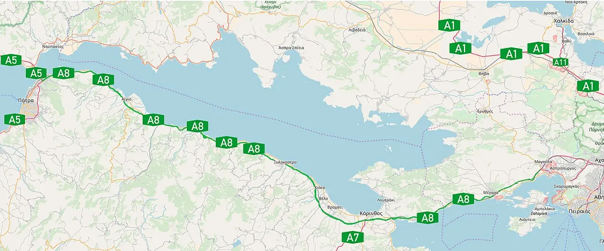
| Leg | Distance / time | Note | Src |
|---|---|---|---|
| Athens airport → Ancient Corinth | ~1 h 30 | A8 Olympia Odos, tolls €13.80–19.50 | [4][6] |
| Ancient Corinth → Nafplio | ~1 h | Nafplio is the only base worth two nights | [4] |
| Nafplio → Mycenae | 30 min | go at 08:00, zero shade | [4] |
| Nafplio → Epidaurus | 30 min | Fri/Sat evenings in Aug = live tragedy | [4][12] |
| Nafplio → Mystras | 127 km · 2 h 07 | split the run south | [21] |
| Mystras → Monemvasia | 93 km · 1 h 53 | — | [21] |
| Nafplio → Monemvasia direct | 231 km · 3 h 29 · €8.55 | too long as a day trip | [21] |
| Monemvasia → Pounta → Elafonisos | ~1 h + 8–10 min ferry | €2/adult + €12/car, ~every 30 min to 23:00 | [4][14] |
| Areopoli → Kalamata | under 2 h | Mani back roads average ~60 km/h | [4][8] |
| Kalamata → Pylos (Voidokilia) | ~1 h | — | [4] |
| Pylos → Olympia | under 2 h | west-coast road | [4] |
| Athens → Kardamyli (direct) | 273 km · 3 h 17 | Athens → Areopoli 295 km · 3 h 20 | [8] |
What the ledger says out loud: in 4–5 days you cannot have the Argolid and Monemvasia and the Mani and Olympia. The Rick Steves forum regulars are blunt — “you have 4 nights and you can't possibly see everything… You have to make choices”, and Areopoli specifically is “not realistically” a day trip from an Argolid base [9]. Monemvasia and Elafonisos push you into a second Laconian base: do them instead of the Mani, never as well.
Route B — Meteora sheet
drive it, don't train itDrive: Athens → Meteora is 3 h 30 – 4 h [3]. Days: one night minimum, two ideal — you want a sunset and a pre-09:00 monastery run, because July–August is peak heat and peak crowds on exposed trails [15] [3].
Delphi + Arachova: 2 h 30 – 3 h from Athens, and site plus museum fit one day comfortably; Arachova is 12 km on and works as a lunch stop. The overnight only earns its keep when Delphi is a staging post to Meteora — Delphi → Meteora is another ~3 h 30 of mountain road [3].
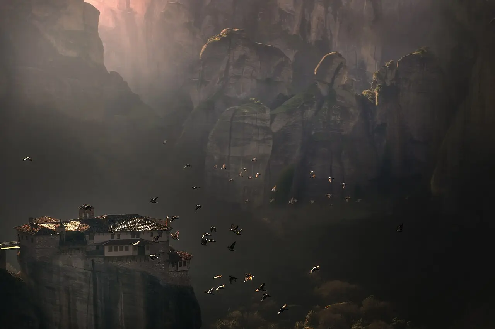
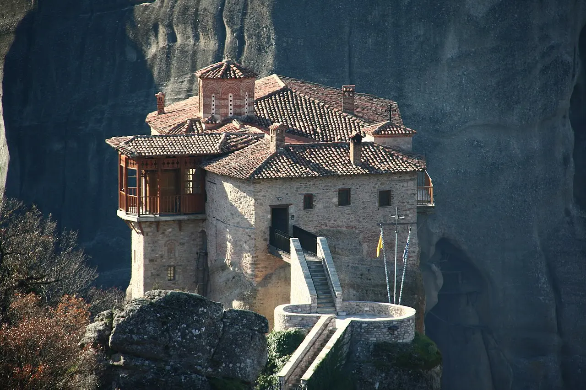
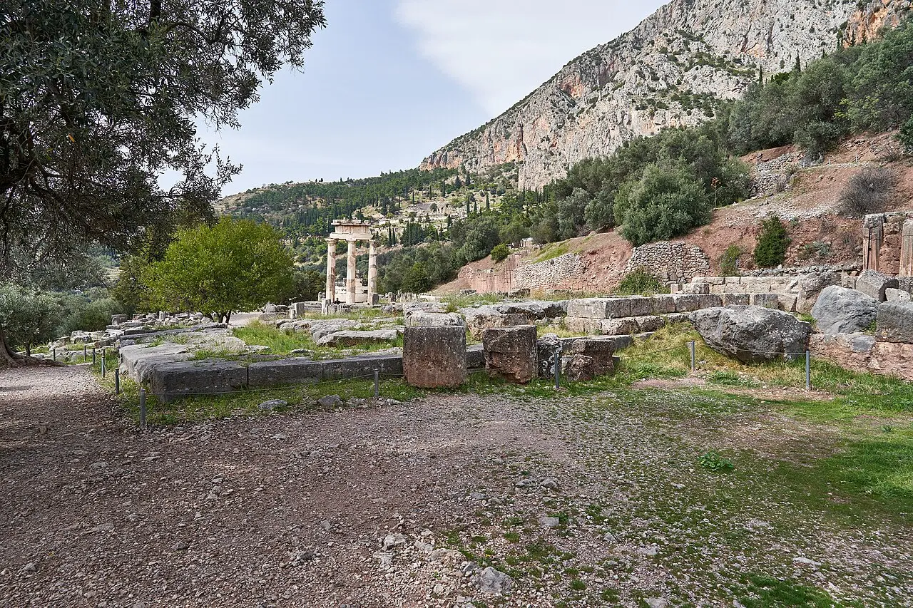
| Monastery · €5 cash each | Summer hours (1 Apr – 31 Oct) | Mon | Tue | Wed | Thu | Fri | Sat | Sun |
|---|---|---|---|---|---|---|---|---|
| Great Meteoron | 09:30–15:00 | • | ✕ | • | • | • | • | • |
| Varlaam | 09:00–16:00 | • | • | • | • | ✕ | • | • |
| Roussanou | 09:00–16:30 | • | • | ✕ | • | • | • | • |
| Holy Trinity | 10:00–16:00 | • | • | • | ✕ | • | • | • |
| St. Stephen's | 09:00–13:30, 15:30–17:30 | ✕ | • | • | • | • | • | • |
| St. Nicholas Anapausas | 09:00–17:00 | • | • | • | • | ✕ | • | • |
Hours, closed days, €5 cash entry and the dress code all from the monasteries' own listing [1]. Friday is the expensive day — it shuts two of the six; a weekend arrival is the only one where all six are open.
SWAP-IN, NOT ADD-ON → Athens → Delphi day trip → drive to Kalambaka (3 h 30 – 4 h) → 2 nights Meteora → back via a Kalambaka morning [3] [15]. Do not attempt both tails in one week.
Left in the pits
good places, wrong week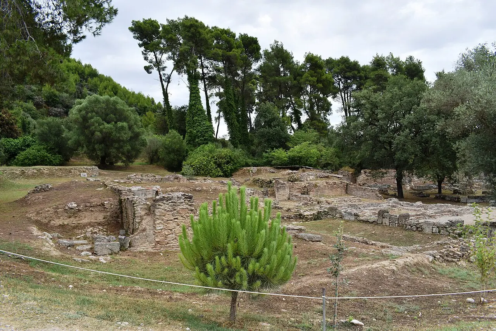
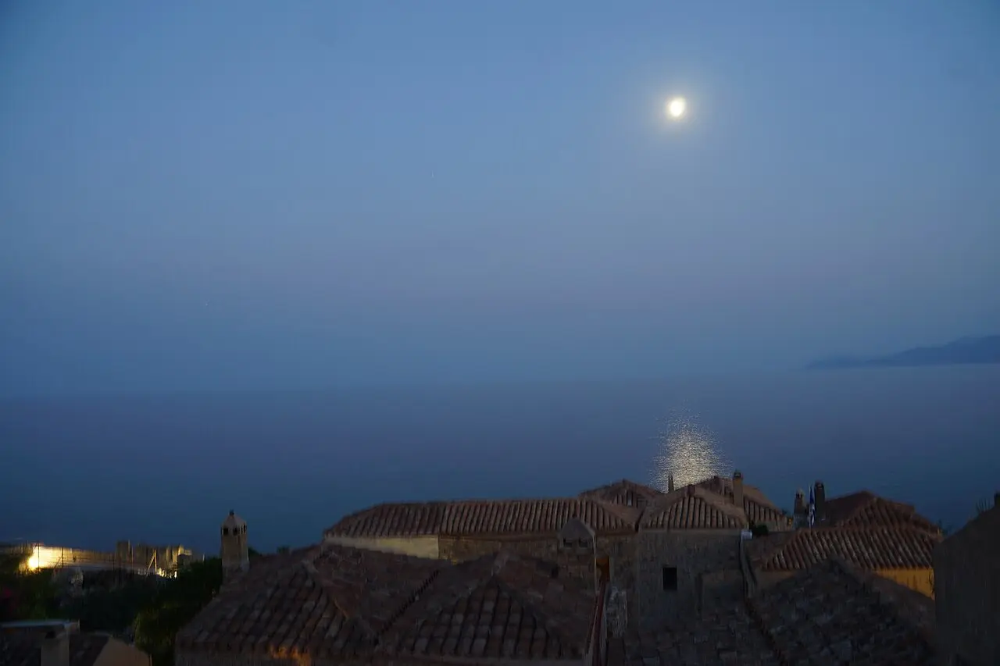
Monemvasia
Not a day trip from the Argolid at that distance; it only works as a second Laconian base — which means dropping the Mani [21].
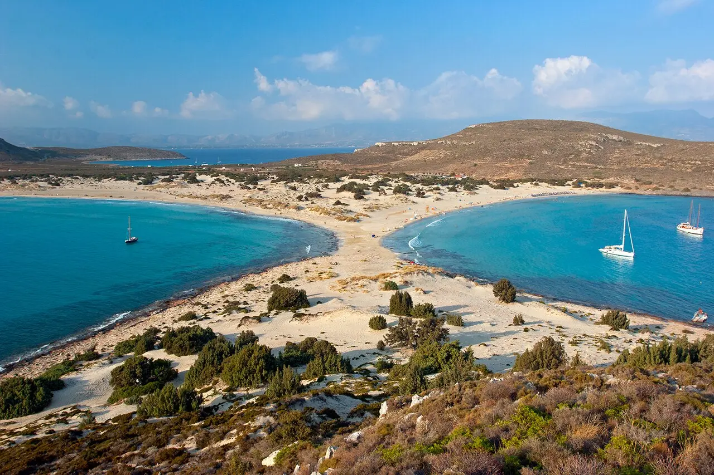
Elafonisos
The Pounta–Elafonisos ferry runs roughly every 30 minutes to after 23:00, so the crossing is never the problem — the 3 h 29 to get to that coast is [14].
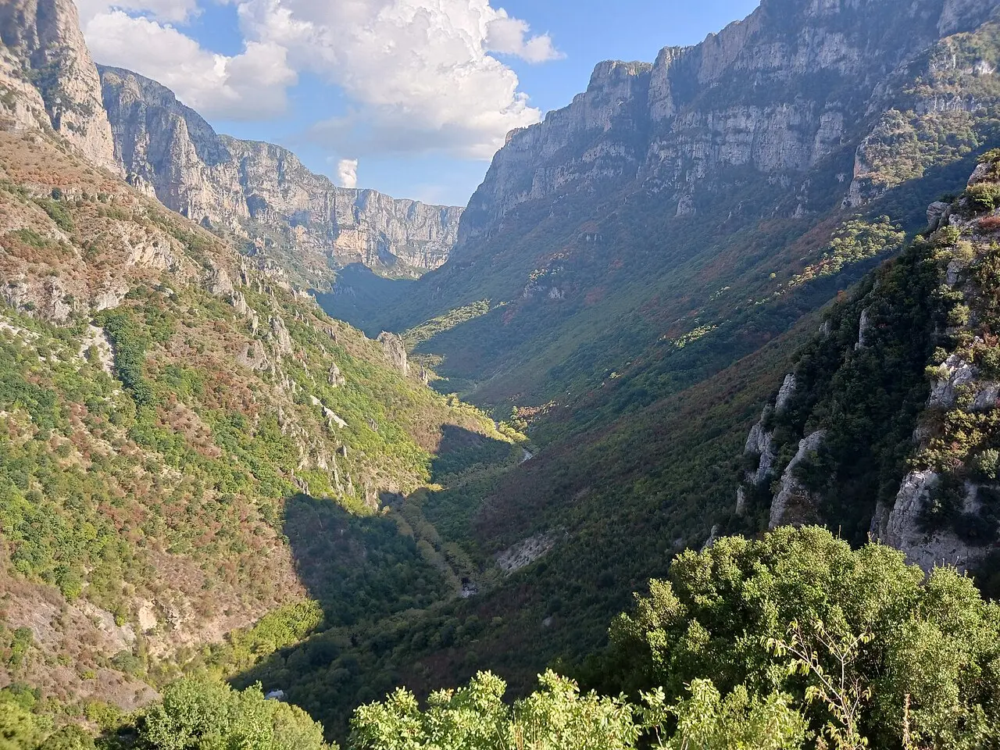
Zagori / Vikos
Allow three hours, not the two and a half a map promises — and the payoff is hiking the Vikos gorge, which you will not enjoy at 40 °C [16].